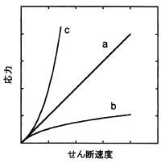

平成30年度 問17 高分子化学
次の記述の。に入る語句の組合せとして、最も適切なものはどれか。
高分子の濃厚溶液や溶融体は粘弾性流体であり、様々なせん断応力挙動を示す。一般に、応力とせん断速度の関係が下図のような傾きが一定の直線になるのは、【 A 】流体と呼ばれる。例えば、流体の構造（高分子の形態や分散質がつくる高次構造）がせん断速度によって変化しない場合に【 A 】流体となる。これに対して、せん断速度の変化とともに高分子鎖の絡み合いの減少や流動誘起によるゾル化が生じて粘度が低下する場合、曲線bのように流動性が増大し、【 B 】流体と呼ばれる。また、海辺の濡れた砂地のような固体と液体からなる濃厚分散系に外力を加えると、粒子の充てん様式が変化して固くなり、曲線cのような挙動を示す。これを【 C 】流体という。また、高分子の濃厚溶液や溶融体の中で棒を回転させると液体が棒に巻きつきながらはいあがるという現象が生じる。これは【 D 】効果と呼ばれている。さらに、流動状態の高分子や高分子液体を押出式の出口の口金（ダイ）から押し出すと、押し出された液体が膨張して、その径がダイの径よりも大きくなる。この現象は【 E 】効果あるいはダイスウェルと呼ばれている。

| 選択肢 | A | B | C | D | E | |
|---|---|---|---|---|---|---|
|
①
|
ニュートン | エントロピー | ダイラタンシー | ワイセンベルグ | バラス | |
|
②
|
ニュートン | ダイラタンシー | チキソトロピー | クリープ | ダッシュポット | |
|
③
|
ニュートン | チキソトロピー | ダイラタンシー | ワイセンベルグ | バラス | |
|
④
|
マックスウェル | ダイラタンシー | チキソトロピー | バラス | ポアソン | |
|
⑤
|
マックスウェル | チキソトロピー | ダイラタンシー | ワイセンベルグ | フォークト | |
この問題はレオロジー（流動学）についての内容です。レオロジーにおいて与える力によって粘度の変わらないものを「ニュートン流体」、与える力によって粘度が変わるものを「非ニュートン流体」と呼びます（A）。
非ニュートン流体は、力を加えた時の粘度の変化に着目して大きく3種類に分類されます。
- ビンガム流体：ある程度の力を加えるまで動かず、動き出すとニュートン流体としてふるまう
- 擬塑性流体：力を加えることで粘度が下がる
- ダイラタント流体：力を加えることで粘度が上がる（C）
力を加えてからの時間経過に伴う粘度変化に着目して、更に2種類の分類がされます。
- チキソトロピー流体：一定の力をかけ続けることで粘度が下がり、その後に一定時間放置すると元の粘度に戻る（B）
- レオペクシー流体：一定の力をかけ続けることで粘度が上がる
ゴムのような弾性の性質と、流動を兼ね備えた性質は粘弾性と呼びます。物体に一定の外力を与えることによってひずみ（変形）が進行する過程をクリープ、物体に一定のひずみを与えることによって生じた応力が低下する過程を応力緩和と言います。
粘弾性流体を棒でかき混ぜると流体が棒に絡みついて這い上がる現象はワイゼンベルグ現象と呼びます（D）。
バラス効果（ダイスウェル）は粘弾性の物質が管から放出されるときに出口で管径よりも大きくなる現象です（E）。